Get Started
RMASCA.RmdIntroduction to RM-ASCA+
Creating a dummy data set
Let us start out by creating some dummy data for us to work with. In this example we have 600 participants measured four different times. The participants belonged to three different groups – for example control group, chocolate diet and salad diet – and we measured ten variables each time.
nPart <- 600
nGroups <- c("Controls", "Chocolate", "Salad")
nTime <- c(1, 2, 3, 4)
variables <- c("BMI", "Glucose", "VLDL", "LDL", "HDL", "ferritin", "CRP", "Happiness", "Anger", "Age")The RMASCA() function expects a data frame in long format that contains at least one column for time (called time), one for group (called group) and one for variables (called variable).
df <- data.frame(
partid = c(1:nPart),
group = nGroups[sample(c(1:length(unique(nGroups))), nPart, replace = TRUE)]
)
df$time <- nTime[1]
df_temp_temp <- df
for(i in nTime[2:length(nTime)]){
df_temp <- df_temp_temp
df_temp$time <- i
df <- rbind(df, df_temp)
}
for(i in 1:length(variables)){
df[,3+i] <- rnorm(nrow(df), mean = 10, sd = 3)
}
colnames(df) <- c("partid", "group", "time", variables)Random data aren’t very interesting, so let us add some trends.
- Control group: These are boring and serve as reference
- Chocolate group: Let us imagine they responded something like
- Increasing BMI and glucose
- Initially decreased anger and increased happiness, but only at time 2 and 3 (before the stomach begins to hurt…)
- Salad group: Let us imagine they responded something like
- Decreasing BMI and glucose
- Initially increased anger and decreased happiness, but only at time 2 and 3 before they get used to it and start to enjoy their new life
The age and HDL, however, increases for all groups, and the other variables are unaffected and vary at random.
df$Anger[df$group == "Chocolate" & df$time == 2] <- df$Anger[df$group == "Chocolate" & df$time == 1]/2
df$Anger[df$group == "Chocolate" & df$time == 3] <- df$Anger[df$group == "Chocolate" & df$time == 1]/1.5
df$Happiness[df$group == "Chocolate" & df$time == 2] <- df$Happiness[df$group == "Chocolate" & df$time == 1]*2
df$Happiness[df$group == "Chocolate" & df$time == 3] <- df$Happiness[df$group == "Chocolate" & df$time == 1]*1.5
df$BMI[df$group == "Chocolate"] <- df$BMI[df$group == "Chocolate"]*df$time[df$group == "Chocolate"]
df$Glucose[df$group == "Chocolate"] <- df$Glucose[df$group == "Chocolate"]*df$time[df$group == "Chocolate"]
df$Anger[df$group == "Salad" & df$time == 2] <- df$Anger[df$group == "Salad" & df$time == 1]*2
df$Anger[df$group == "Salad" & df$time == 3] <- df$Anger[df$group == "Salad" & df$time == 1]*1.5
df$Happiness[df$group == "Salad" & df$time == 2] <- df$Happiness[df$group == "Salad" & df$time == 1]/2
df$Happiness[df$group == "Salad" & df$time == 3] <- df$Happiness[df$group == "Salad" & df$time == 1]/1.5
df$BMI[df$group == "Salad"] <- df$BMI[df$group == "Salad"]/df$time[df$group == "Salad"]
df$Glucose[df$group == "Salad"] <- df$Glucose[df$group == "Salad"]/df$time[df$group == "Salad"]
df$Age <- df$Age*df$time
df$HDL <- df$HDL*df$timeAnd we need to define the control group and transform it to the long format. And since they are “real” people, we will give them individual baselines so that we need to use linear mixed models with participant as random intercepts.
df$group <- factor(df$group)
df$group <- relevel(df$group, ref = "Controls")
df <- reshape2::melt(df, id.vars = c("partid", "group", "time"))
for(i in unique(df$variables)){
for(j in unique(df$partid)){
df$value[df$variables == i & df$partid == j] <- df$value[df$variables == i & df$partid == j] + sample(0:5,1)
}
}Let us see how it looks at group level
ggplot(data = df,
aes(x = factor(time), y = value, color = group)) +
geom_boxplot() +
facet_wrap(~variable, scales = "free_y") +
theme(legend.position = "bottom") +
labs(x = "Time", y = "Value", color = "Group")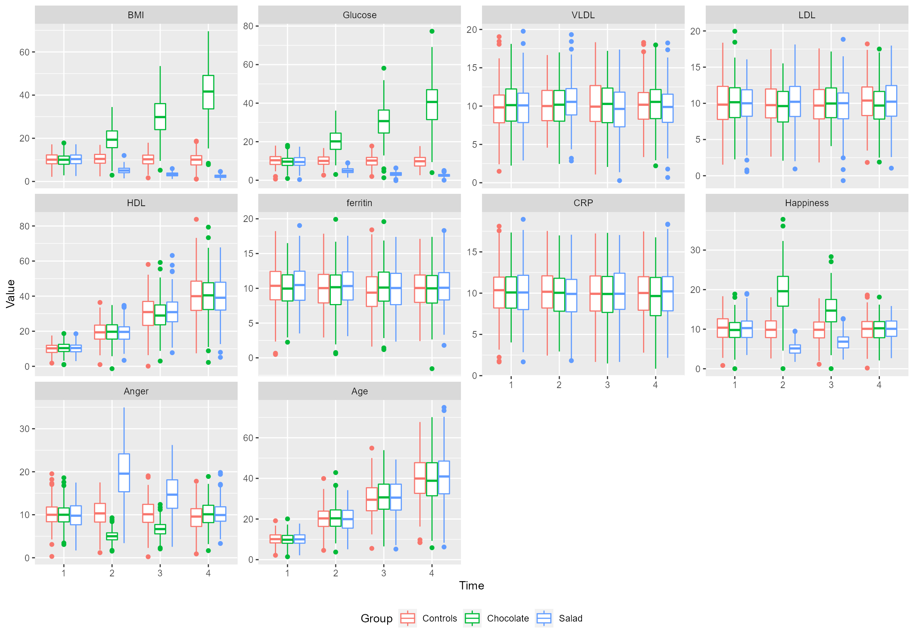
And we can have a look at the participants using the plotParts() function,
do.call(
ggpubr::ggarrange,
c(plotParts(df, participantColumn = "partid", valueColumn = "value", addSmooth = NA),
common.legend = TRUE, legend = "bottom")
)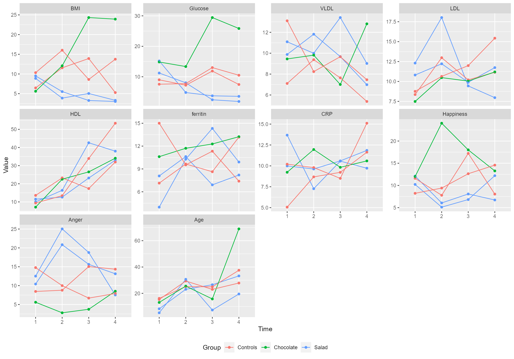
Using RM-ASCA+
Now that we have a data set, let us try the RMASCA() function! First we need to decide what kind of model we want. For simplicity, let us start with a very simple model with terms for time, group and interaction.
model.formula <- value ~ time*group + (1|partid)
res.simple <- RMASCA(df = df, formula = model.formula)
#> Scaling data...
#> Calculating LMM coefficients...
#> Registered S3 methods overwritten by 'lme4':
#> method from
#> cooks.distance.influence.merMod car
#> influence.merMod car
#> dfbeta.influence.merMod car
#> dfbetas.influence.merMod car
#> Finished calculating LMM coefficients!
#> Calculating effect matrix (may take some time...)
#> Finished calculating effect matrix!To visualize the result, simply use plot(res.simple);
plot(res.simple) Let us interpret the figure from top left:
Let us interpret the figure from top left:
- Top left: The control group has some variable – one or more – that increases steadily
- Top right: The variables that increase are age and HDL
- Bottom left: Relative to the control group, the chocolate group increases in some variable and the salad group decreases
- Bottom right: The variables that increase for the chocolate group (and decreases for the salad group) are mainly BMI and glucose
However, that is only the first component. In this case, that variable alone explains most of the variation in the data (>99%) NB: Må sjekke om forklart varians har blitt riktig. Let us plot the second component too:
plot(res.simple, component = "PC2")The interpretation is similar to the one above. We are most interested in the bottom panels: the chocolate group has first an increase at time 2, but then decrease again. To the right, we can see that happiness follows that trajectory, whereas anger has the inverted trajectory (first decreased anger, then return to baseline). The salad group has the opposite trajectories. Cool, huh?
We can explore this by visualizing predictions on group level from the underlying linear mixed models. For example
do.call(
ggpubr::ggarrange,
c(plotPred(res.simple, variable = c("BMI", "Age", "Happiness", "Anger")),
common.legend = TRUE, legend = "bottom")
)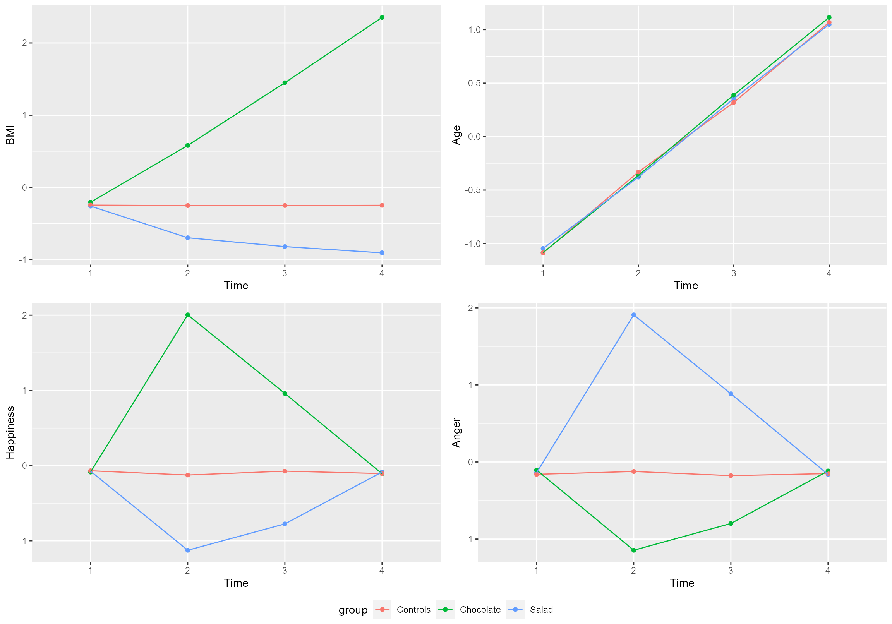
Scree plots
So, how many components do we need? With PCA, the first component is always the one explaining most variance. We can look at how much the various components explain,
screeplot(res.simple)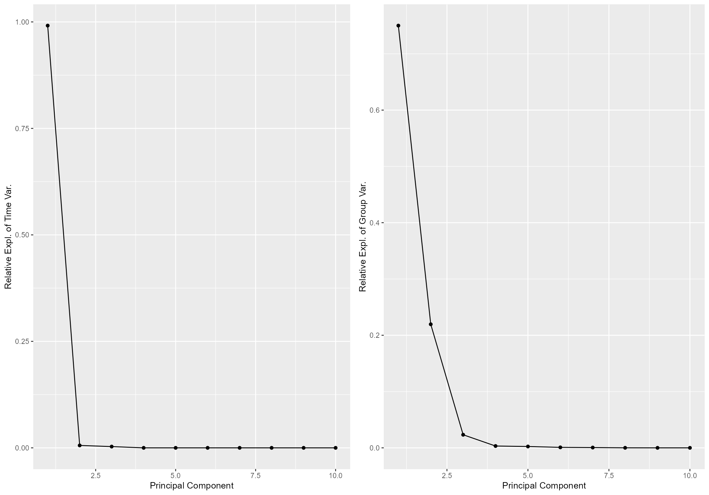
And it seems that we should use PC1 for the time effect, but probably both PC1 and PC2 for the group effect. Which makes sense, since we added several distinct group trends to our data that needs different trajectories to be explained.
Customized plots
Often, we want some more control over the plots. Luckily, we can easily get the necessary data using getLoadings() and getScores(). For example
scores <- getScores(res.simple)
loadings <- getLoadings(res.simple)
tplot_score <- function(df, x, y, group, color = NA){
if(is.na(color)){
g <- ggplot(df, aes(x = x, y = y, group = group)) +
geom_point() +
geom_line() +
theme_bw()
}else{
g <- ggplot(df, aes(x = x, y = y, group = group, color = color)) +
geom_point() +
geom_line() +
theme_bw()
}
return(g)
}
tplot_loading <- function(df, x, y){
g <- ggplot(df, aes(x = x, y = y)) +
geom_point() +
theme_bw() +
theme(axis.text.x = element_text(angle = 90, vjust = 0.4, hjust=1))
return(g)
}
gst_1 <- tplot_score(df = scores$time, x = scores$time$time, y = scores$time$PC1, group = NA) +
labs(x = "Time", y = paste0("Pr Comp. 1 (",round(100*scores$explained$time[1], 2),"%)"))
gst_2 <- tplot_score(scores$time, scores$time$time, scores$time$PC2, group = NA) +
labs(x = "Time", y = paste0("Pr Comp. 2 (",round(100*scores$explained$time[2], 2),"%)"))
gsg_1 <- tplot_score(scores$group, x = scores$group$time, y = scores$group$PC1, group = scores$group$group, color = scores$group$group) +
labs(x = "Time", y = paste0("Pr Comp. 1 (",round(100*scores$explained$group[1], 2),"%)"))
#> Warning in if (is.na(color)) {: the condition has length > 1 and only the first
#> element will be used
gsg_2 <- tplot_score(scores$group, x = scores$group$time, y = scores$group$PC2, group = scores$group$group, color = scores$group$group) +
labs(x = "Time", y = paste0("Pr Comp. 2 (",round(100*scores$explained$group[2], 2),"%)"))
#> Warning in if (is.na(color)) {: the condition has length > 1 and only the first
#> element will be used
glt_1 <- tplot_loading(loadings$time, x = loadings$time$covars, y = loadings$time$PC1) +
labs(x = "Variable", y = paste0("Pr Comp. 1 (",round(100*loadings$explained$time[1], 2),"%)"))
glt_2 <- tplot_loading(loadings$time, x = loadings$time$covars, y = loadings$time$PC2) +
labs(x = "Variable", y = paste0("Pr Comp. 2 (",round(100*loadings$explained$time[2], 2),"%)"))
glg_1 <- tplot_loading(loadings$group, x = loadings$group$covars, y = loadings$group$PC1) +
labs(x = "Variable", y = paste0("Pr Comp. 1 (",round(100*loadings$explained$group[1], 2),"%)"))
glg_2 <- tplot_loading(loadings$group, x = loadings$group$covars, y = loadings$group$PC2) +
labs(x = "Variable", y = paste0("Pr. Comp. 2 (",round(100*loadings$explained$group[2], 2),"%)"))
ggpubr::ggarrange(
ggpubr::ggarrange(gst_1, glt_1, gsg_1, glg_1, nrow = 1, widths = c(2,3,2,3), common.legend = TRUE, legend = "none"),
ggpubr::ggarrange(gst_2, glt_2, gsg_2, glg_2, nrow = 1, widths = c(2,3,2,3), common.legend = TRUE, legend = "bottom"),
nrow = 2
)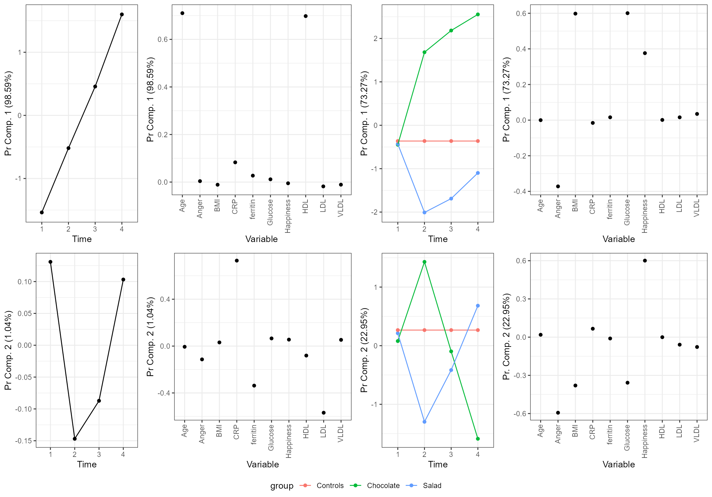
Note that we can also call the various parts of the plot directly, and apply styles as we wish, for example
ggpubr::ggarrange(
ggpubr::ggarrange(plot(res.simple, effect = "time", only = "score") + theme_bw(),
plot(res.simple, effect = "time", only = "loading") + theme_bw(),
plot(res.simple, effect = "group", only = "score") + theme_bw(),
plot(res.simple, effect = "group", only = "loading") + theme_bw(),
nrow = 1, widths = c(2,3,2,3),
common.legend = TRUE, legend = "none"),
ggpubr::ggarrange(plot(res.simple, effect = "time", only = "score", component = "PC2") + theme_bw(),
plot(res.simple, effect = "time", only = "loading", component = "PC2") + theme_bw(),
plot(res.simple, effect = "group", only = "score", component = "PC2") + theme_bw(),
plot(res.simple, effect = "group", only = "loading", component = "PC2") + theme_bw(),
nrow = 1, widths = c(2,3,2,3),
common.legend = TRUE, legend = "bottom"),
nrow = 2
)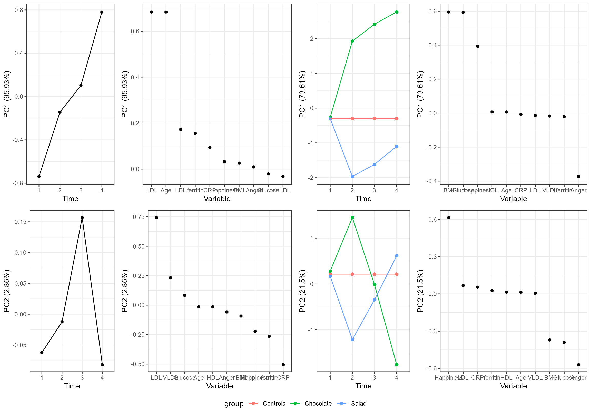
Robustness testing
We often need to now how robust our results are. In this package, we use leave-one-out jack-knifing where we divide our participants into nValFold groups and leave out one of the groups. Note that the group proportions are kept relatively stable. We repeat this process nValRuns times and use the 2.5 and 97.5 percentiles as our uncertainty estimate. If you know that you are going to do this, you can set validate = TRUE when you run the RMASCA model the first time. This usually takes some time (but it is extra slow in rmarkdown, so don’t be scared, outside knitr it used less than two-three seconds per run on my computer). Also note that we need to specify which column that contains participant id with the argument partid. We can also call validation after having initialized the RMASCA object:
res.simple$nValRuns <- 20 # you should use more, but this is simply an example
res.simple <- validate(res.simple, participantColumn = "partid")
#> Running validation...
#> - Run 1 of 20
#> --- Used 5.4 seconds. Est. time remaining: 102.65 seconds
#> - Run 2 of 20
#> --- Used 2.78 seconds. Est. time remaining: 73.6 seconds
#> - Run 3 of 20
#> --- Used 2.96 seconds. Est. time remaining: 63.09 seconds
#> - Run 4 of 20
#> --- Used 2.96 seconds. Est. time remaining: 56.38 seconds
#> - Run 5 of 20
#> --- Used 3.27 seconds. Est. time remaining: 52.09 seconds
#> - Run 6 of 20
#> --- Used 3.46 seconds. Est. time remaining: 48.59 seconds
#> - Run 7 of 20
#> --- Used 2.52 seconds. Est. time remaining: 43.35 seconds
#> - Run 8 of 20
#> --- Used 4.1 seconds. Est. time remaining: 41.16 seconds
#> - Run 9 of 20
#> --- Used 2.96 seconds. Est. time remaining: 37.15 seconds
#> - Run 10 of 20
#> --- Used 2.4 seconds. Est. time remaining: 32.8 seconds
#> - Run 11 of 20
#> --- Used 2.65 seconds. Est. time remaining: 29.01 seconds
#> - Run 12 of 20
#> --- Used 3.66 seconds. Est. time remaining: 26.07 seconds
#> - Run 13 of 20
#> --- Used 3.57 seconds. Est. time remaining: 22.98 seconds
#> - Run 14 of 20
#> --- Used 3.31 seconds. Est. time remaining: 19.71 seconds
#> - Run 15 of 20
#> --- Used 2.64 seconds. Est. time remaining: 16.21 seconds
#> - Run 16 of 20
#> --- Used 2.58 seconds. Est. time remaining: 12.8 seconds
#> - Run 17 of 20
#> --- Used 2.51 seconds. Est. time remaining: 9.48 seconds
#> - Run 18 of 20
#> --- Used 3.2 seconds. Est. time remaining: 6.32 seconds
#> - Run 19 of 20
#> --- Used 3.22 seconds. Est. time remaining: 3.17 seconds
#> - Run 20 of 20
#> --- Used 2.93 seconds. Est. time remaining: 0 seconds
plot(res.simple)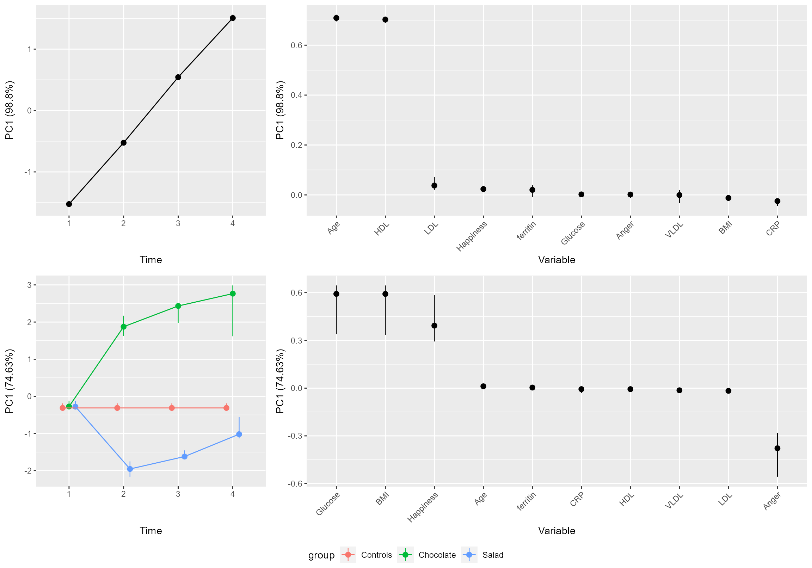
plot(res.simple, component = "PC2")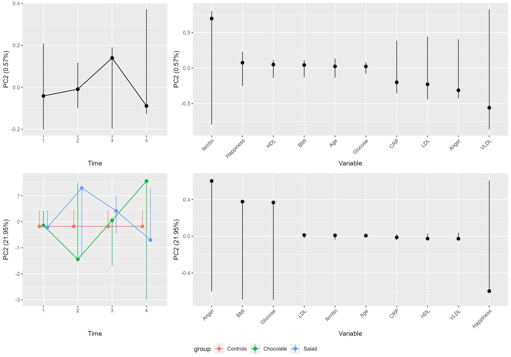
Alternative models
Interaction only
If our experiment was an intervention, then we can assume that the groups were equal at baseline (time 1). Then we can skip the main group effect and only use time and interaction, like this:
model.formula <- value ~ time + time:group + (1|partid)
res.mod2 <- RMASCA(df = df, formula = model.formula)
#> Scaling data...
#> Calculating LMM coefficients...
#> Finished calculating LMM coefficients!
#> Calculating effect matrix (may take some time...)
#> Finished calculating effect matrix!
plot(res.mod2)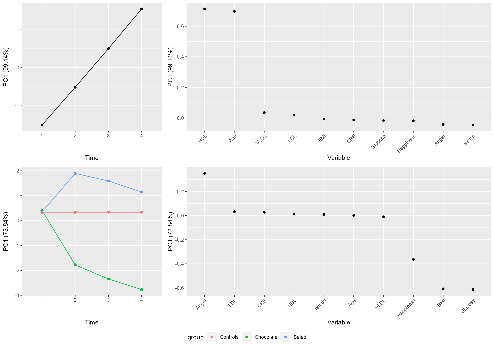
plot(res.mod2, component = "PC2")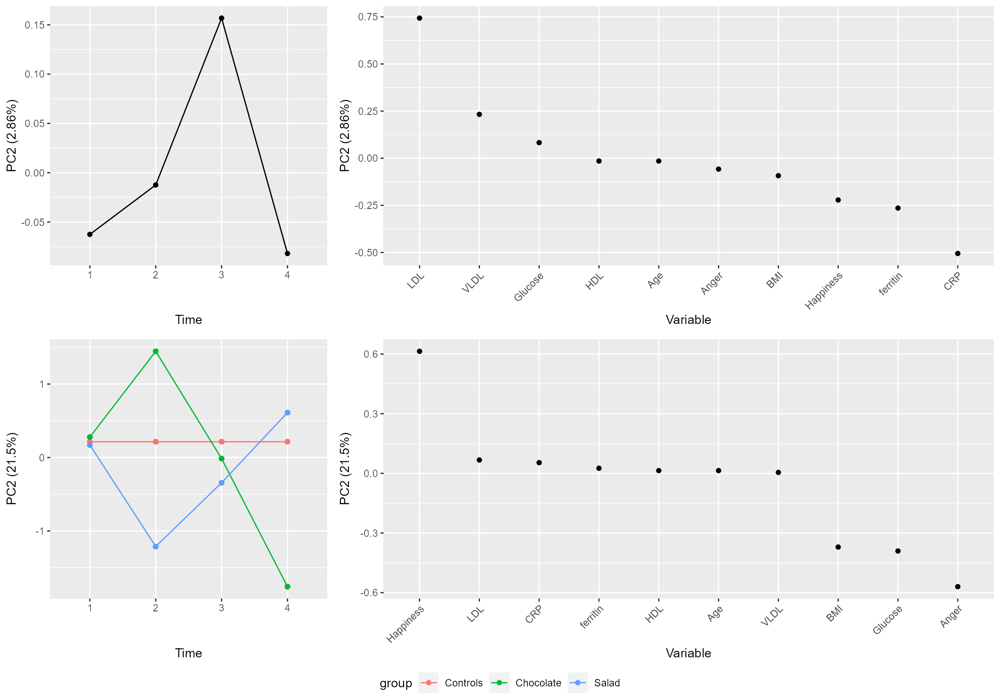
As you can see, it is quite similar to the previous model, but all the groups have the same value for time 1.
Interaction only with combined time and group effect
Sometimes it doesn’t make sense to use a reference group – for example if we didn’t have any controls and the first group had a salt-free diet. We can then use a single PCA instead of separating time and group effects:
model.formula <- value ~ time + time:group + (1|partid)
res.mod3 <- RMASCA(df = df, formula = model.formula, separateTimeAndGroup = FALSE)
#> Scaling data...
#> Calculating LMM coefficients...
#> Finished calculating LMM coefficients!
#> Calculating effect matrix (may take some time...)
#> Finished calculating effect matrix!
plot(res.mod3)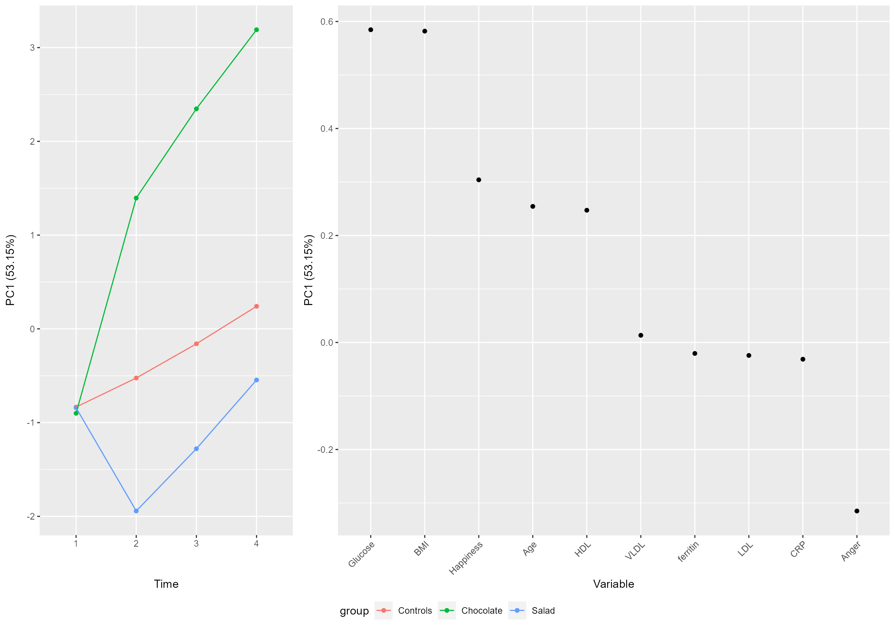
plot(res.mod3, component = "PC2")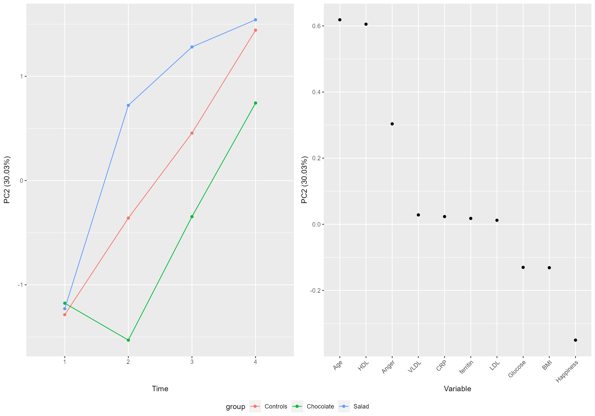
Covariates
This time we want to adjust for age and not include it in the ASCA itself;
age <- subset(df, variable == "Age")$value
df <- subset(df, variable != "Age")
df$age <- age
model.formula <- value ~ time + time:group + age + (1|partid)
res.mod4 <- RMASCA(df = df, formula = model.formula)
#> Scaling data...
#> Calculating LMM coefficients...
#> Finished calculating LMM coefficients!
#> Calculating effect matrix (may take some time...)
#> Finished calculating effect matrix!
plot(res.mod4)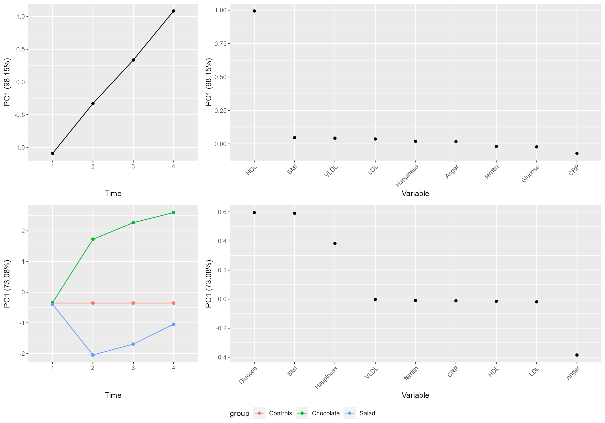
plot(res.mod4, component = "PC2")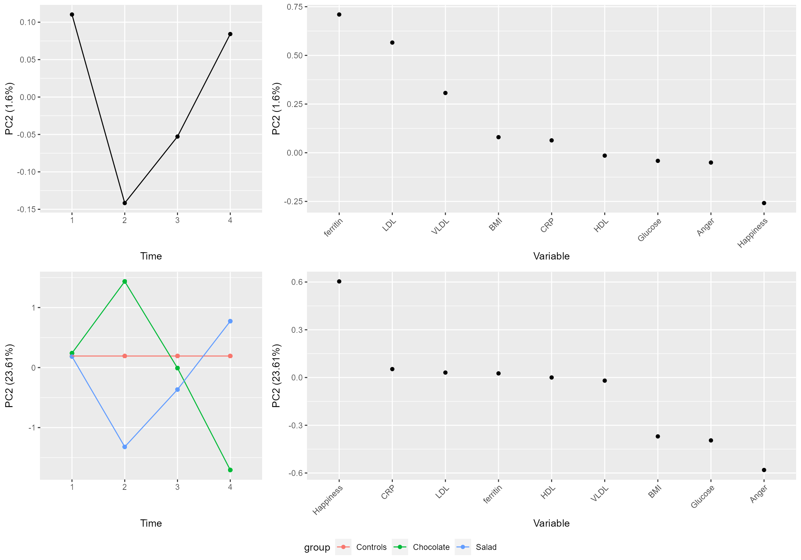
do.call(
ggpubr::ggarrange,
c(plotPred(res.mod4, variable = c("BMI", "Happiness", "Anger", "HDL")),
common.legend = TRUE, legend = "bottom")
)
#> - Using mean of age : 25.13142
#> - Using mean of age : 25.13142
#> - Using mean of age : 25.13142
#> - Using mean of age : 25.13142
We can see that the linear increase in age is no longer part of the output.
Diagnostics
Normal distribution of residuals
RM-ASCA+ is built on Linear Mixed Models, and one should check that the residuals approach normal distribution. With RMASCA, the LMM objects can be found as
summary(res.simple$lmer.models[[1]])
#> Linear mixed model fit by REML. t-tests use Satterthwaite's method [
#> lmerModLmerTest]
#> Formula: object$formula
#> Data: subset(object$df, variable == i)
#> Control: lme4::lmerControl(calc.derivs = FALSE)
#>
#> REML criterion at convergence: 3037.8
#>
#> Scaled residuals:
#> Min 1Q Median 3Q Max
#> -5.4362 -0.3395 0.0083 0.3485 5.8111
#>
#> Random effects:
#> Groups Name Variance Std.Dev.
#> partid (Intercept) 0.0000551 0.007423
#> Residual 0.2033836 0.450981
#> Number of obs: 2400, groups: partid, 600
#>
#> Fixed effects:
#> Estimate Std. Error df t value Pr(>|t|)
#> (Intercept) -2.803e-01 3.213e-02 2.388e+03 -8.724 < 2e-16 ***
#> time2 -9.723e-03 4.544e-02 1.791e+03 -0.214 0.831
#> time3 1.580e-03 4.544e-02 1.791e+03 0.035 0.972
#> time4 2.219e-02 4.544e-02 1.791e+03 0.488 0.625
#> groupChocolate -4.790e-03 4.489e-02 2.388e+03 -0.107 0.915
#> groupSalad -2.781e-02 4.550e-02 2.388e+03 -0.611 0.541
#> time2:groupChocolate 7.383e-01 6.348e-02 1.791e+03 11.630 < 2e-16 ***
#> time3:groupChocolate 1.712e+00 6.348e-02 1.791e+03 26.962 < 2e-16 ***
#> time4:groupChocolate 2.394e+00 6.348e-02 1.791e+03 37.715 < 2e-16 ***
#> time2:groupSalad -4.043e-01 6.434e-02 1.791e+03 -6.283 4.16e-10 ***
#> time3:groupSalad -5.516e-01 6.434e-02 1.791e+03 -8.573 < 2e-16 ***
#> time4:groupSalad -6.388e-01 6.434e-02 1.791e+03 -9.928 < 2e-16 ***
#> ---
#> Signif. codes: 0 '***' 0.001 '**' 0.01 '*' 0.05 '.' 0.1 ' ' 1
#>
#> Correlation of Fixed Effects:
#> (Intr) time2 time3 time4 grpChc grpSld tm2:gC tm3:gC tm4:gC
#> time2 -0.707
#> time3 -0.707 0.500
#> time4 -0.707 0.500 0.500
#> groupChoclt -0.716 0.506 0.506 0.506
#> groupSalad -0.706 0.499 0.499 0.499 0.506
#> tm2:grpChcl 0.506 -0.716 -0.358 -0.358 -0.707 -0.357
#> tm3:grpChcl 0.506 -0.358 -0.716 -0.358 -0.707 -0.357 0.500
#> tm4:grpChcl 0.506 -0.358 -0.358 -0.716 -0.707 -0.357 0.500 0.500
#> tim2:grpSld 0.499 -0.706 -0.353 -0.353 -0.357 -0.707 0.506 0.253 0.253
#> tim3:grpSld 0.499 -0.353 -0.706 -0.353 -0.357 -0.707 0.253 0.506 0.253
#> tim4:grpSld 0.499 -0.353 -0.353 -0.706 -0.357 -0.707 0.253 0.253 0.506
#> tm2:gS tm3:gS
#> time2
#> time3
#> time4
#> groupChoclt
#> groupSalad
#> tm2:grpChcl
#> tm3:grpChcl
#> tm4:grpChcl
#> tim2:grpSld
#> tim3:grpSld 0.500
#> tim4:grpSld 0.500 0.500We can also assess the residuals,
P values
As you saw above, we can use the summary function to view the p values from your LMMs, but a shortcut is
head(res.simple$LMM.coefficient)
#> estimate pvalue covar variable comp
#> 1 -0.280338790 4.953183e-18 BMI (Intercept) TIME
#> 2 -0.009723119 8.305898e-01 BMI time2 TIME
#> 3 0.001580129 9.722639e-01 BMI time3 TIME
#> 4 0.022188189 6.254009e-01 BMI time4 TIME
#> 5 -0.004789633 9.150459e-01 BMI groupChocolate GROUP
#> 6 -0.027810182 5.411546e-01 BMI groupSalad GROUP